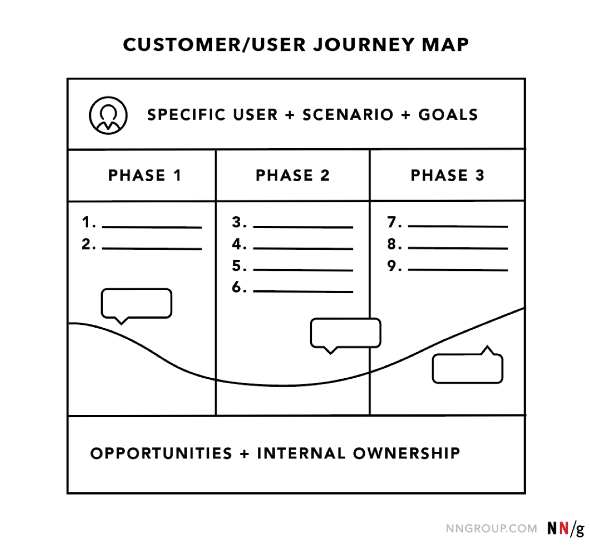

Journey maps are a common UX tool. They come in all shapes, sizes, and formats. Depending on the context, they can be used in a variety of ways. This article covers the basics: what a journey map is (and is not), related terminology, common variations, and how we can use journey maps.
Definition of a Journey Map
A journey map is a visualization of the process that a person goes through in order to accomplish a goal.
In its most basic form, journey mapping starts by compiling a series of user actions into a timeline. Next, the timeline is fleshed out with user thoughts and emotions in order to create a narrative. This narrative is condensed and polished, ultimately leading to a visualization.
Touch points don't matter the same way they once did when so much is happening online. Now, this isn't 100% applicable to every business and every consumer, but it's so widely understood that it hardly matters anymore.

Most journey maps follow a similar format: at the top, a specific user, a specific scenario, and corresponding expectations or goals in the middle, high-level phases that are comprised of user actions, thoughts, and emotions; at the bottom, the takeaways: opportunities, insights, and internal ownership.
Key Components of a Journey Map
Journey maps come in all shapes and sizes. Regardless of how they look, journey maps have the following 5 key elements in common:
1. Actor: The actor is the persona or user who experiences the journey. The actor is who the journey map is about — a point of view. Actors usually align with personas and their actions in the map are rooted in data. Provide one point of view per map in order to build a strong, clear narrative.
2. Scenario + Expectations: The scenario describes the situation that the journey map addresses and is associated with an actor’s goal or need and specific expectations. Scenarios can be real (for existing products and services) or anticipated — for products that are yet in the design stage. Journey maps are best for scenarios that involve a sequence of events (such as shopping or taking a trip), describe a process (thus involve a set of transitions over time), or might involve multiple channels.
3. Journey Phases: Journey phases are the different high-level stages in the journey. They provide organization for the rest of the information in the journey map (actions, thoughts, and emotions). The stages will vary from scenario to scenario; each organization will usually have data to help it determine what these phases are for a given scenario. Some examples are discover, try-buy-use-seek support, engagement-education-research-evaluation-justification, purchase-adoption-retention-expansion-advocacy.
4. Actions, Mindsets, and Emotions: These are behaviors, thoughts, and feelings the actor has throughout the journey and that are mapped within each of the journey phases.
- Actions are the actual behaviors and steps taken by users. This component is not meant to be a granular step-by-step log of every discrete interaction. Rather, it is a narrative of the steps the actor takes during that phase.
- Mindsets correspond to users’ thoughts, questions, motivations, and information needs at different stages in the journey. Ideally, these are customer verbatims from research.
- Emotions are plotted as single line across the journey phases, literally signaling the emotional “ups” and “downs” of the experience. Think of this line as a contextual layer of emotion that tells us where the user is delighted versus frustrated.
5. Opportunities:
Opportunities (along with additional context such as ownership and metrics) are insights gained from mapping; they speak to how the user experience can be optimized. Insights and opportunities help the team draw knowledge from the map:
What needs to be done with this knowledge?
Who owns what change?
Where are the biggest opportunities?
How are we going to measure improvements we implement?